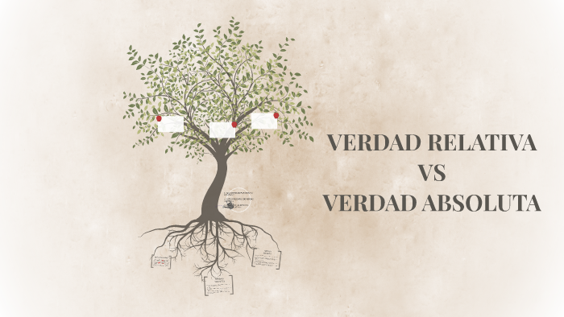
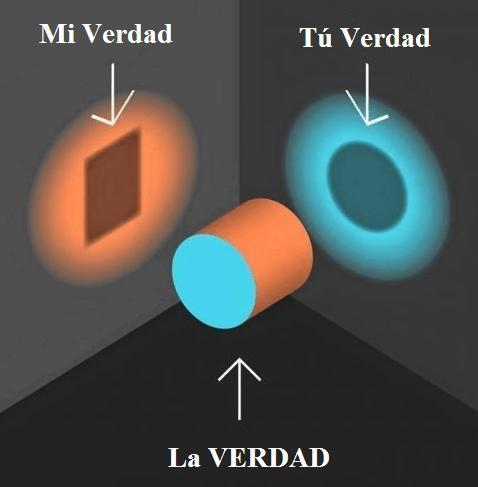

¡¡ Bienvenido al mundo de Etica !!
Esta materia se ocupa del ámbito del conocimiento moral que tiene como objetivo principal la COMPRENSIÓN DEL CARÁCTER ÉTICO del ser humano, tanto en su dimensión personal como en su proyección social, así como el aprendizaje de actitudes tolerantes y solidarias.
LA VERDAD
Verdad Absoluta
Por verdad absoluta, en metafísica, se entiende la inmutabilidad del conocimiento humano. Considerando todos los objetos y fenómenos como inmutables y dados de una vez para siempre, la metafísica admite toda verdad como acabado y definitivo resultado del conocimiento. El materialismo dialéctico niega tal género de verdad absoluta. El conocimiento representa en sí un proceso histórico de movimiento de la ignorancia al saber; de la noción simple de los distintos fenómenos y partes de la naturaleza, hacia su más profunda y completa comprensión, y el descubrimiento continuo de nuevas leyes de su desarrollo. Cada grado del conocimiento está limitado por el nivel de la ciencia y las condiciones históricas de la vida social, que inevitablemente hacen relativos, es decir, incompletos nuestros conceptos de la naturaleza. Empero, siendo relativas las verdades que nuestro conocimiento descubre, contienen, a la vez, partículas de la verdad absoluta, por cuanto reflejan exactamente, aunque de modo incompleto, el mundo objetivo exterior. Por eso, el conocimiento logrado mediante verdades incompletas y relativas nos aproxima a la verdad absoluta, es decir, al conocimiento pleno y universal del mundo objetivo.

Verdad Relativa
Cuando alguien dice que la verdad es relativa, lo que normalmente quiere decir es que no hay verdad absoluta. Algunas cosas pueden parecer ser verdaderas para usted, pero no para mí. Si usted lo cree, para usted eso es verdad. Si yo no lo creo, para mí no es verdad. Cuando las personas dicen cosas como: "Está bien si para usted Dios existe, pero para mí él no existe", están expresando la creencia popular de que la verdad es relativa. Todo el concepto de la "verdad relativa" suena tolerante y de mente abierta. Sin embargo, tras un análisis más detenido, no es del todo abierto en absoluto. En esencia, al decir que "Dios existe para usted pero no para mí", es decir que el concepto que la otra persona tiene de Dios está equivocado. Esto censura. Pero nadie realmente cree que toda la verdad es relativa. Ninguna persona cuerda dice, "la gravedad funciona para usted, pero no para mí", y procede a saltar de edificios altos creyendo que no le va a pasar nada.
